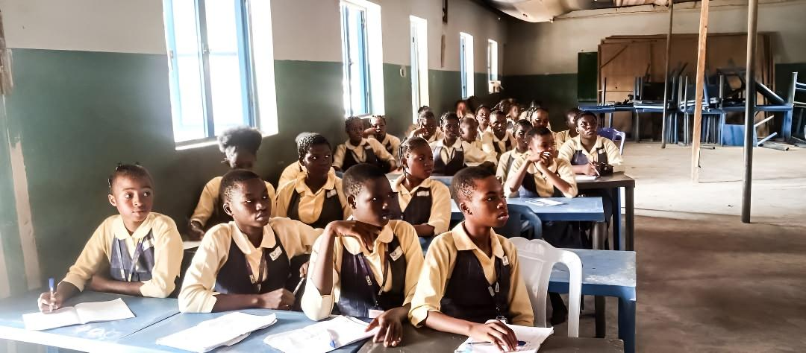

2024
Top Class College — Ondo State
Purpose Discovery & Career Development
Team Victory Horasis Initiative engaged students in discussions on purpose discovery and career development, helping them think about their potential and future aspirations. The initiative also sponsored WAEC fees for five female students, providing practical educational support to help them pursue their academic goals.
- WAEC examination fees sponsored for 5 female students
- Discussions on purpose discovery and career development
- Practical encouragement toward future aspirations